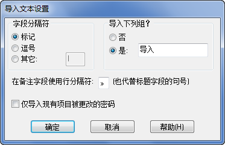

文本格式
文本文件用于输入包含一个或多个密码项目组成的密码项目文件。每个字段里的项目都是由一个字段分隔符分隔和每个项目可包含一个或多个行。
输入文本文件格式详细情况可在“纯文本输出与输入格式”章节中找到。
输入文本设置对话
可在处理文件之前配置输入到文本文件中的字段分隔符与输入到新项目里的默认组名称。

- 文件 > 输入...
- 选择纯文本文件...
- 为需要输入的文本文件设定输入设置与参数
- 如果一个备注字段已使用复式线分隔符，任何前一条输出或使用一个文本编辑器以便把它输入到这里，在输入处理时，备注字段将被复式线替换符号分成一个新行。
- 单击确定
- 选择文本文件输入。
- 在输入过程结尾，出现一个小对话框显示有多少额外项目及多少(如果有)分析不成功。
要点: 输入首行文件必须有一列标记分隔每项目包含的字段名称，例如:
“组/标题、用户名、密码、网址”等。该行是通过“输出文本”函数自动生成，但必须手工添加给文件创建自其它工具。
XML
XML(可扩展置标语言)是一个流行格式作为传递应用程序来往数据的文件。
Password Safe 可以输入 XML 文件，
它是按照图解定义生成在文件
pwsafe.xsd 中，以分配部份作为条件。